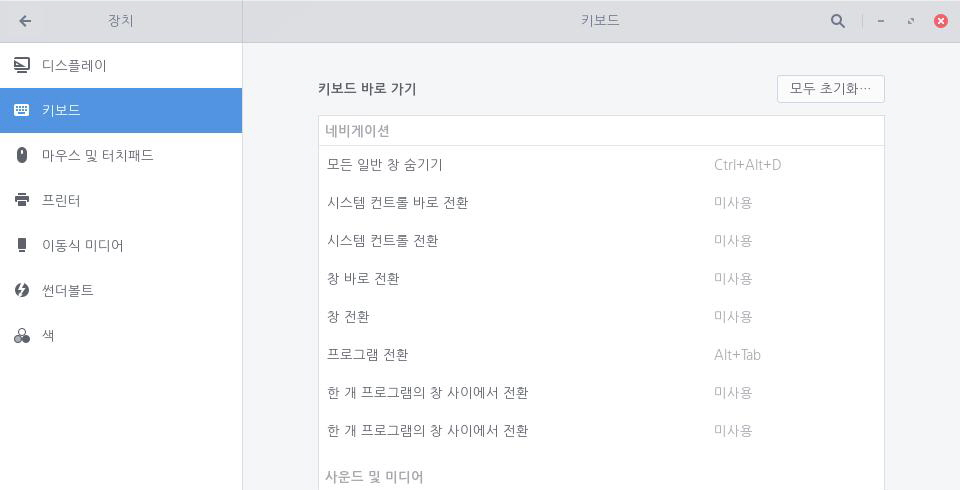
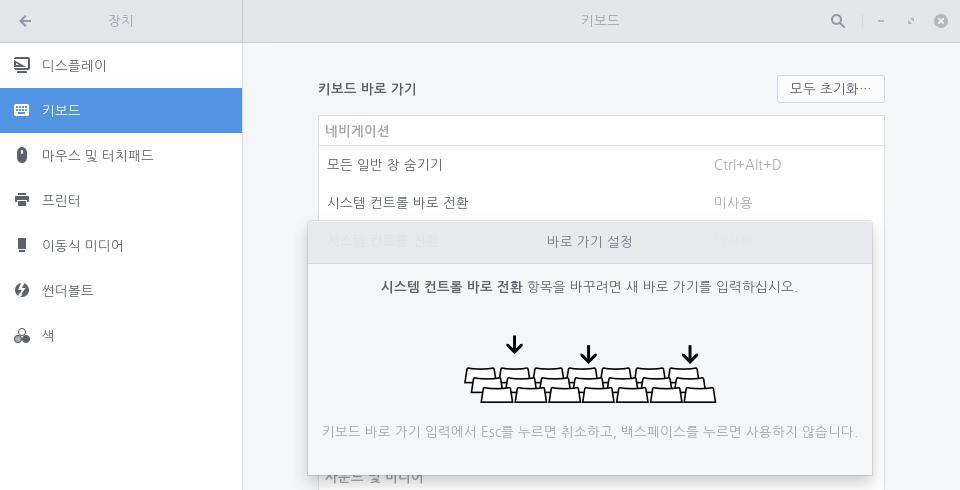
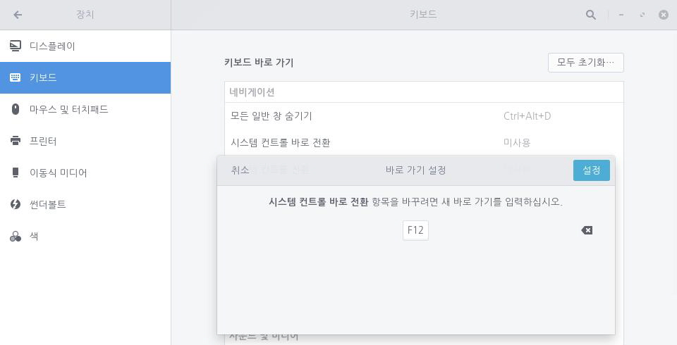

기본적으로 키보드에서는 특정 기능을 바로 수행할 수 있도록 바로 가기 키가 사전에 설정되어 있습니다. 사용자가 원하는 경우 바로 가기 키 설정을 통해 기존에 설정된 키를 변경하거나 새로운 키를 지정할 수 있습니다. 다음 단계를 수행하여 키보드 바로 가기 키를 변경합니다.1. 좌측 하단의 [시작]아이콘을 클릭하고 검색 창에 "설정"을 입력한 후 [설정] 애플리케이션을 실행합니다.
 2. [설정] 애플리케이션 사이드 바에서 [장치]를 클릭한 다음 [키보드]를 클릭합니다.
2. [설정] 애플리케이션 사이드 바에서 [장치]를 클릭한 다음 [키보드]를 클릭합니다.
3. 바로 가기 키 목록에서 원하는 기능을 찾아 해당 키를 클릭하고 사용자가 원하는 키로 변경합니다.
4. Backspace 키를 눌러 해당 기능의 단축 키를 없애거나 ESC 키를 눌러 변경 내용을 취소할 수 있습니다.


사전 설정된 바로 가기 키
구름 운영 체제 설치 시 기본적으로 사용할 수 있는 바로 가기 키는 사전에 설정되며 범주별로 다음과 같이 나누어져 있습니다.
| 동작 | 바로 가기 키 |
|---|---|
| 일반 창 모두 숨기기 | Ctrl + Alt + D |
| 시스템 컨트롤 바로 전환 | 미사용 |
| 시스템 컨트롤 전환 | 미사용 |
| 창 바로 전환 | 미사용 |
| 창 전환 | 미사용 |
| 프로그램 전환 | Alt + Tab |
| 한 개 프로그램에서 창 전환 | 미사용 |
| 한 개 프로그램에서 창 전환 | 미사용 |
바로 가기 키 설정
기본적으로 설정된 기능 이외에 사용자가 원하는 기능에 대한 바로 가기 키를 설정할 수 있습니다. 다음 단계를 수행하여 키보드 바로 가기 키를 설정합니다.1. 좌측 하단의 [시작]
2. [설정] 애플리케이션 사이드 바에서 [장치]를 클릭하고 [키보드]를 클릭합니다.
3. 화면 아래에서 + 버튼을 클릭하여 원하는 기능의 이름, 명령어, 바로 가기 키를 설정합니다.
4. 생성된 바로 가기 키를 클릭하여 설정한 내용을 변경할 수 있습니다.